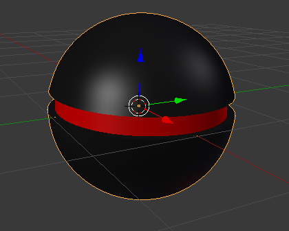
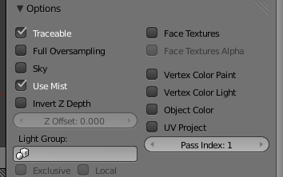
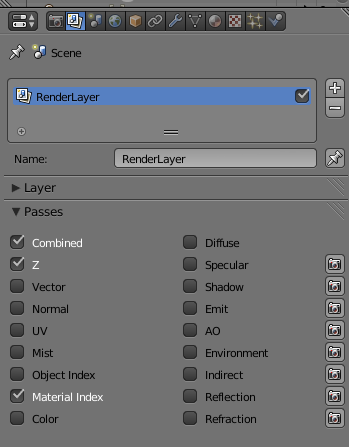
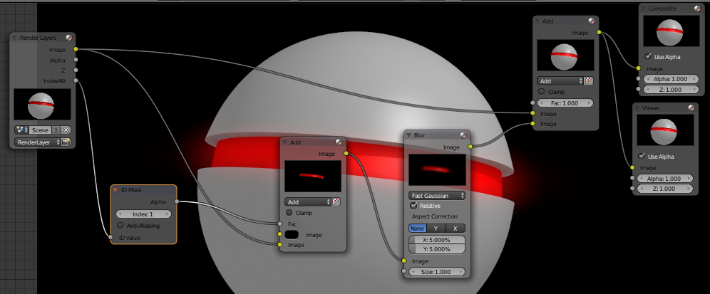
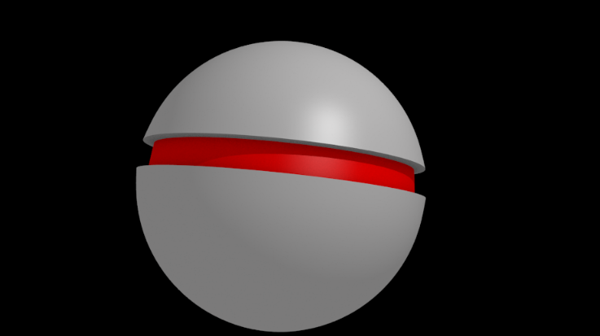
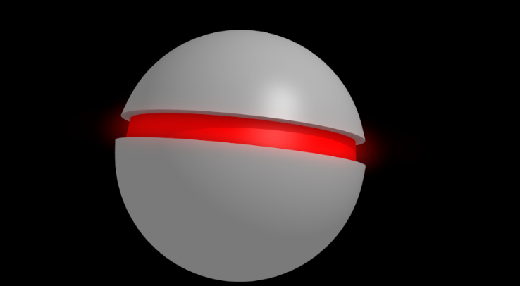

Construa um objeto a seu gosto para aplicar 2 materais.
No nosso caso, utilizámos uma UV Sphere. Selecionámos a cintura e fizemos extrude de modo a ficar com saliência.
Aplicámos 2 materiais. Um para objeto inteiro, outro (vermelho) para a cintura. Inicialmente utilizámos o preto para o objeto mas posteriormente alterámos para um cinza claro.
Para podermos posteriormente isolar o material vermelho durante a composição, associámos o Pass Index: 1 ao material vermelho (painel de materiais).
É este número de index que permitir identificar o material e isolar o mesmo.
No painel de Render, ativámos a opção Material Index na janela de Passes.
Deste modo, aquando da renderização, irá ser produzida uma lista (index) dos materiais em uso que tiverem atribuído um número de Pass Index.
A configuração utilizada em baixo é a seguinte:
> Como Input temos um nó de Render Layers que permite utilizar a imagem renderizada através da câmara. Este nó tem uma saída IndexMA pois ativámos o Material Index.
> Temos um nó ID Mask (Converter) com o Index: 1 que permite isolar o material definido com Pass Index: 1.
>Temos um nó de Add (Color > Mix) que adiciona a imagem renderizada a um fundo preto tendo em conta o Index:1. Ou seja, o material com Index:1 vai funcionar como uma “máscara”, só deixando passar o material com Index:1.
> Temos um nó de Blur (Filter) para desfocar. Este nó só vai desfocar o vermelho, só se aplica ao Material com Index:1.
> Temos um nó de Add (Color > Mix) que vai permitir sobrepor o vermelho desfocado ao render original criando um efeito de brilho.
Em baixo, pode comparar a imagem original e a imagem com o efeito de Glow.
 